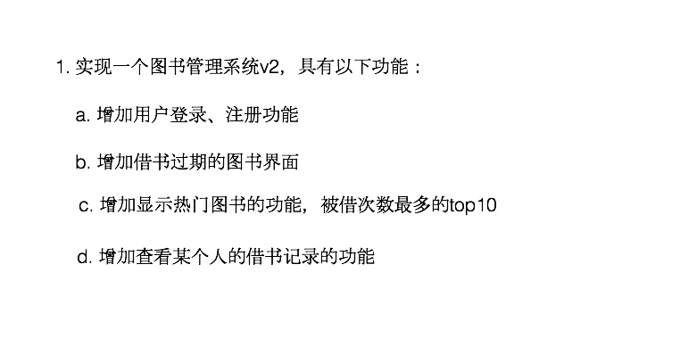

内存布局
- go的内存布局是连续的
- 结构体成员小写是包内访问
- 没有构造函数，使用工厂模式解决这个问题
tag
- tag可以通过反射的机制获取，常用的就是json序列化和反序列化,方便打包
type Student struct {
Name string `json:"name"` //打包压缩的字段
Age int `json:"age"`
Score int `json:"score"`
}
interface
作业


Sort
- Sort(Inteface interface){}
- 排序本质上是针对具体的数组或者切片实现一个具体化的排序算法
接口断言
func classifier(items ...interface{}) {
for _, v := range items {
switch v.(type) {
case bool:
fmt.Println("bool type")
case int, int64, int32:
fmt.Println("int")
case float32, float64:
fmt.Println("float32")
case string:
fmt.Println("string")
}
}
}
func main() {
classifier(2, 8.2, "ok string", false)
}